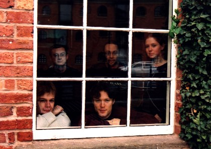

Biography
The band was formed in 1994 by Simon Dew and Martin Keates, who served their apprenticeships in folk dance bands in and around Manchester.
Jabadaw played for major festivals, ceilidhs and concerts across the country, provided music for theatre, and appeared on television. The band worked with some of the country's best callers, including Martyn Harvey, Dave Hunt, Gordon Potts, Nick Walden, Michael Catovsky and Andrew Swaine, consistently pulling in large audiences. We released one CD and a Tune Book. We decided to call it a day in 2007.
If you are interested, you can read more about significant events in Jabadaw's history below.
2006
Jabadaw tunebook published. Pete Lockwood leaves the band to concentrate on his work with Cock & Bull and Asha. Edwin Beasant joins the band on drums and percussion.
Significant Jabadaw events: Phoenix Ceilidhs, Knees Up Cecil Sharp, Warwick Folk Festival, Sidmouth Folk Week, Leopard Spot Clogdance 30th Birthday Ceilidh, Sheffield Folk Festival.
Other events featuring members of Jabadaw: The former members of Jabadaw Trio, along with Peter Kenney on bass guitar, reunited as Polka Express to play at Manchester Ceilidh.
2005
Our tenth anniversary year. Jabadaw tune book compiled.
Significant Jabadaw events: IVFDF Norwich (as a surprise last-minute replacement for Whapweasel), M27 Megabops, Holmfirth Festival, Solid Earth solstice concert, Manchester Ceilidh, Ely Folk Weekend, Otley Folk Festival.
Other events featuring members of Jabadaw: The former members of Jabadaw Trio reunited to play at Manchester Ceilidh under the name Polka Express.
2004
Douglas effectively leaves the band to be replaced by Pete Lockwood of Cock & Bull and Asha.
Significant Jabadaw events: Great Western Ceilidhs, Lancashire Wallopers Weekend of Clog, Oxfolk, Stroud Ceilidhs, Folk Around Bristol, Phoenix Music Club, Sidmouth International Festival, Great Western Ceilidhs again (!), Preston Midwinter Ceilidh.
Other events featuring members of Jabadaw: Manchester Ceilidh.
2003
Two tracks from Jabadaw featured on the English Ceilidh Bands sampler CD (Coughing Dog Music COF 010). Jabadaw record new demo CD in the autumn.
Significant Jabadaw events: Whittlesea Straw Bear, Norwich Folkbeat, Chippenham Folk Festival, Ely Folk Festival, Folkworks 4Reel Festival, Preston Midwinter Ceilidh.
Other events featuring members of Jabadaw: IVFDF Sheffield, Phoenix Music Club.
2002
Jabadaw leave Hemlock Music and become self-representing. Featured in English Dance and Song magazine. At the end of the year, Guy leaves to be replaced by Peter Kenney.

Significant Jabadaw events: Accrington Town Hall Ceilidhs, Knees Up Cecil Sharp, Shenley Brook End Jubilee Fête, Leominster Festival, Brampton Live!, Towersey Village Festival, Bridgnorth Folk Festival.
2001
After a highly successful festival season, Miranda leaves Jabadaw to go travelling. Helena Reynolds joins Jabadaw. Jabadaw Trio disbanded.
Significant Jabadaw gigs: Bridport Ceilidhs, M27 Megabops, Crick Boat Show, Reeling in Ealing, Sidmouth International Festival, Broadstairs Folk Week, Swanage Festival, Bromyard Festival.
Significant Jabadaw Trio gigs: Norwich Folkbeat, Association of Festival Organisers Showcase Concert, Platform One Acton, On Bouge!, Pied à Terre, Belper Folk Club.
2000
The first Jabadaw CD launched. Jabadaw sign representation deal with Hemlock Music.

Significant Jabadaw gigs: Lancashire Wallopers Weekend of Clog, Cirencester Corn Hall Ceilidhs, Reeling in Ealing, Wiggin Ceilidhs, St Helens Ceilidhs, Chippenham Festival, Sunderland Kite Festival, Ryburn 3 Step Dances.
Significant Jabadaw Trio gigs: Islington Folk Club, Cecil Sharp House, Wilmslow Green Room (2-week production of A Midsummer Night's Dream at Gawsworth Hall).
1999
We record and mix the first Jabadaw CD throughout the year. After this, Simon Heywood leaves to be replaced by Guy Lightowler, although Simon still deps when Guy is not available.
Significant Jabadaw gigs: Knees Up Cecil Sharp, Copford Ceilidhs, Downton Cuckoo Fair, Clitheroe Great Days of Folk, Saxmundham Reel Dance Ceilidhs.
Significant Jabadaw Trio gigs: Kinnersley Winter Festival, Club Cheoil at Band on the Wall (supporting the Bumblebees), Folk in the Fall, Wirral Eurodance.
1998
Martin, Miranda and Simon Dew form the Jabadaw Trio to do concerts, folk clubs and small acoustic venues. Jabadaw Trio tape recorded in December.

Significant Jabadaw gigs: Clitheroe Ceilidhs, IVFDF Sheffield, Bothy Folk Club Ceilidhs, Wiggin Ceilidhs, Sidmouth International Festival, UMSU, Lancaster Clocks Back Festival.
Significant Jabadaw Trio gigs: Wirral Eurodance, Brancepeth Castle May Ball, Hartington Village Hop, Le Grand Session de Manchester (supporting La Chavanée).
1997
Jabadaw record new demo tape. Breakthrough year on the festival circuit. Feature in December issue of Folk Roots magazine.
Significant Jabadaw gigs: Lancashire Wallopers Weekend of Clog, Wiggin Ceilidhs, Stepping Out Ceilidhs, Towersey Village Festival, UMSU, Manchester Uni Ceilidh Society Reunion, Sheffield Uni Ceilidh Society.
1996
Miranda Rutter from the Manchester University Ceilidh Society joins the band in April, making us a five-piece. At about the same time, Stefan leaves to be replaced by Douglas Black, who has depped for Stefan in previous Jabadaw gigs.
Significant Jabadaw gigs: Ringheye Ceilidhs, Wiggin Ceilidhs, UMSU, Manchester Uni Ceilidh Society Reunion, Midlands Euro-Bops in Bingham (supporting X-Blowzabella).
1995
Simon Dew, Martin Keates, Simon Heywood and Stefan Hambrook record Jabadaw's first demo tape and start gigging as a four-piece.
Significant Jabadaw gigs: In Tandem Xmas Concert in Rivington (supporting Ensemble del Doppio Bordone), Sheffield Uni Ceilidh Society.
[Back to Jabadaw Home Page]